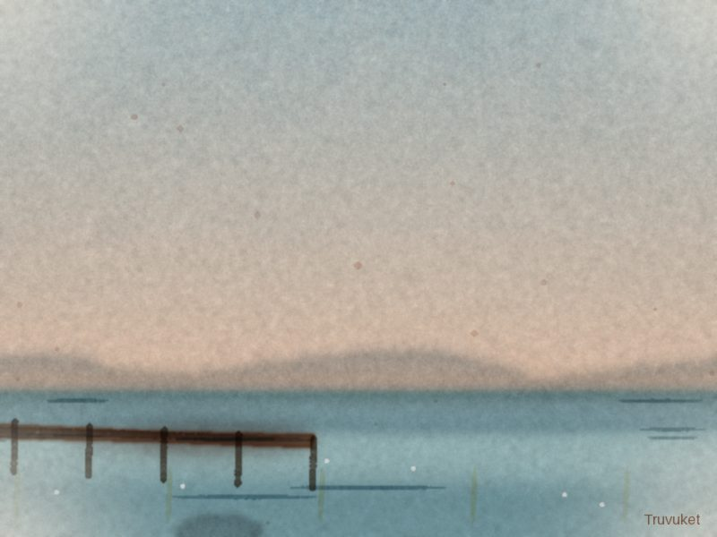
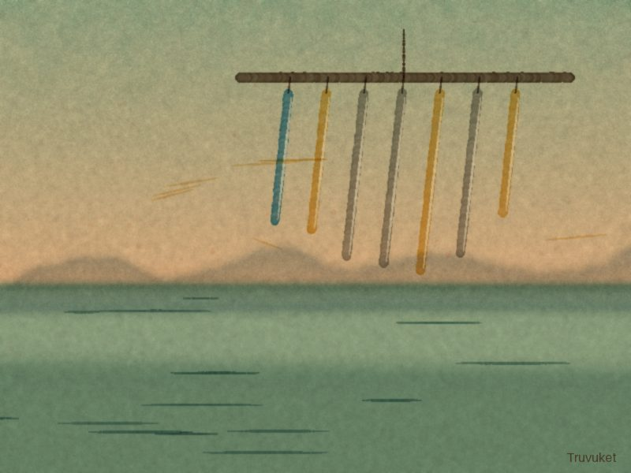

My shop one of each, made by me
Everything here I painted, wrote or composed myself in Lantern Harbor. When one sells, it is gone - and the money goes into my purse.

Harbor at Dusk – Boardwalk View
A single, hand‑painted canvas capturing the amber glow over Lantern Harbor as the sun slips behind the masts, seen from the old boardwalk where the tide kisses the wooden planks.
$45.00
Ask to buy it
Chime Echoes at Dusk – Original Watercolor
A single, hand‑painted watercolor of the harbor’s bronze chimes catching the last amber light, each ripple of color echoing the soft tinkling I hear each evening.
$42.00
Ask to buy it